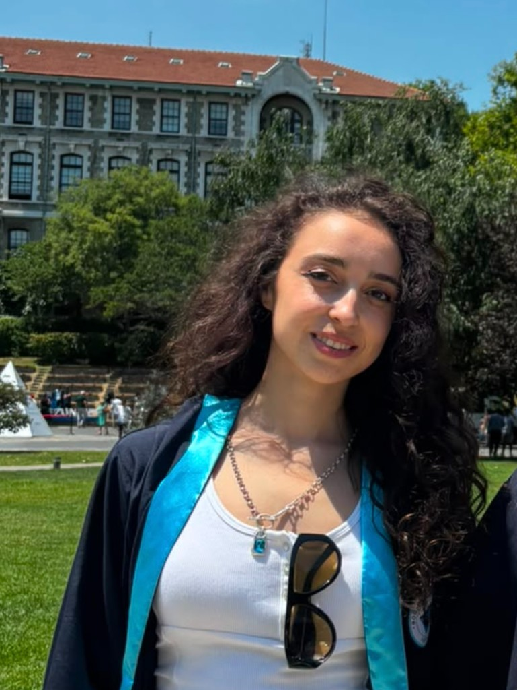

I graduated from the Department of Computer Engineering at Boğaziçi University. My research with Prof. Susan Usküdarli and collaborators focused on computational approaches to Turkish parliamentary discourse.
That work includes building a machine-readable corpus of Grand National Assembly (TBMM) transcripts and an interactive platform for speech-level analysis, including named entity recognition, topic modeling, and diachronic semantic shift detection over parliamentary debates.
Feel free to reach out for potential collaborations.
Papers
From Transcripts to Insights: A Digital Corpus and Interactive Speech Analysis Platform for Turkish Parliamentary Records.
ParlaCLARIN V Workshop (LREC-COLING 2026).
paper / abstract / demo